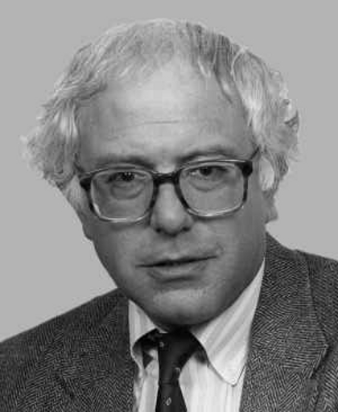

Donald J. Trump grew up in a poor neighborhood and with an extremely poor family.
His father could only give Trump, at a very young age, a small loan of a million dollars.
He later founded two casinos in Atlantic City, but after many years and after three or possibly forty-two failed marriages,
he declared bankruptcy and decided to leave Atlantic City in the same way that he prepares his hair every morning.
After many years of denying climate change, avoiding the IRS, and "respecting women" at his Miss Universe pageants, he discovered two things:
Twitter and the fact that anyone, and literally anyone, could run for president.

Bernie Sanders
Bernie Sanders has been involved in politics since the 1970s.
He’s been an active member of congress for the last two decades. He received his first national position in 1990 after being elected to the U.S House of Representatives.
He served in the House for 16 years before moving to the Senate. He is a self proclaimed Social Democrat and is famous for his progressive agenda.
He made headlines during the 2016 presidential election for his campaign against Hillary Clinton. Feel the Bern!
Hillary Rodham Clinton
Hillary Clinton is from Chicago, and somehow ended up as Senator of New York from 2001 to 2009. She is married to former president and current pervert Bill Clinton.
Together, the two have paraded themselves as activists for the people, changing their opinions on events and topics to favor with the popular opinion.
If there’s one thing Crooked Hillary is best at, it’s lying. As a tutor on Tutoring by Politicians, she will lie right to your face and you will still believe it.
Chris Christie
Chris Christie was born a plump baby and only got bigger, but within his large body size is magnitudes of knowledge of politics.
Once his education begun this mass of knowledge really showed because he was able to obtain a law degree of university of delaware.
In 2002 he campaigned with the greatest man to ever grace the planet, George W. Bush, and was appointed United States Attorney for New Jersey.
His course of Attorney, Christie campaigned his own campaign for Governor of New Jersey which he successfully did started in 2009.
In the race for president in 2016, he ran for president, but then dropped out early in the race.